← Índice de los 69 tutes de IDA
Tute 67 · HackSys pisando SEH (32-bit)
se conecta con: Fuera de alcance
INTRODUCCION AL REVERSING CON IDA PRO DESE CERO PARTE 67.
Un método que no habíamos visto para explotar una de las vulnerabilidades del HACKSYS driver PISANDO SEH en 32 BITS.
En este caso un amigo me pidió varias aclaraciones sobre el método usado para bypasear la cookie en maquinas de 32 bits, cuando tenemos un stack overflow en kernel, y podemos pisar el return address, pero hay una cookie que impide que podamos terminar ejecutando código.
Obviamente si tenemos otra vulnerabilidad que permita leakear, podríamos leer el valor de la cookie y después usarlo al enviar nuestra data para pisarla, pero hay un método que nunca había usado en la práctica, que es un poco viejito y en sistemas que no sean windows 7 de 32 bits no va, pero estaría bueno mirarlo, para aclararle a mi amigo y al que lo quiera leer (y a mí mismo jeje) como es la idea.
Ya sabemos que el driver vulnerable se puede bajar de acá
https://github.com/hacksysteam/HackSysExtremeVulnerableDriver/releases/download/v1.20/HEVD.1.20.zip
y la tool para cargarlo de aquí
http://www.osronline.com/OsrDown.cfm/osrloaderv30.zip?name=osrloaderv30.zip&id=157
antes de copiarlo al target abriremos el driver en el loader de IDA para analizarlo.
Dentro del zip
HEVD.1.20\drv\vulnerable\i386
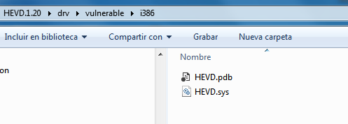
Esta el driver y los símbolos.
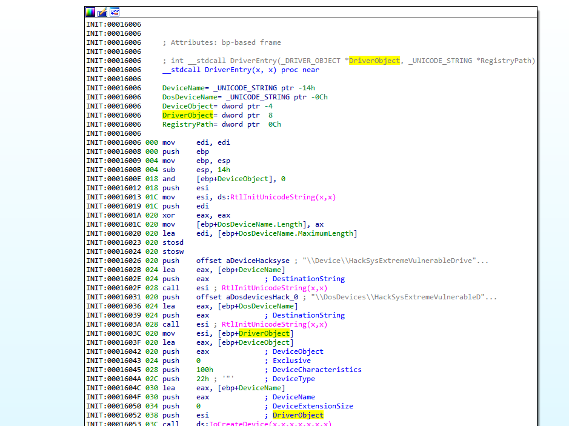
Al abrirlo en IDA vemos el DriverEntry, cuyo primer argumento siempre es un puntero a _DRIVER_OBJECT.
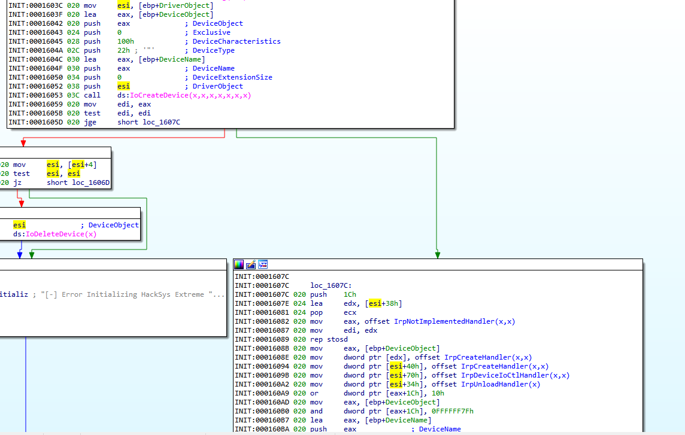
ESI es el puntero a _DRIVER_OBJECT.
Si vamos a LOCAL TYPES
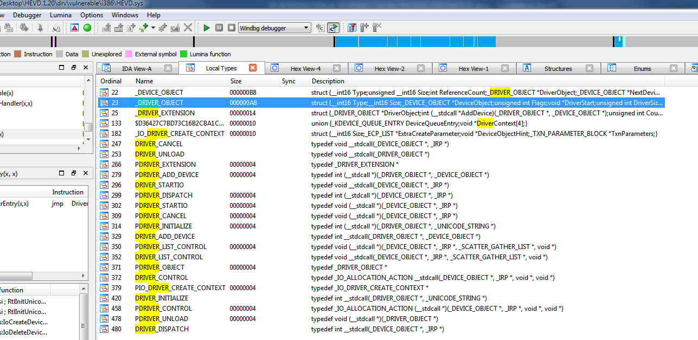
Vemos que esta dicha estructura, si buscamos _IRP nos aparecen las más usadas para reversear.
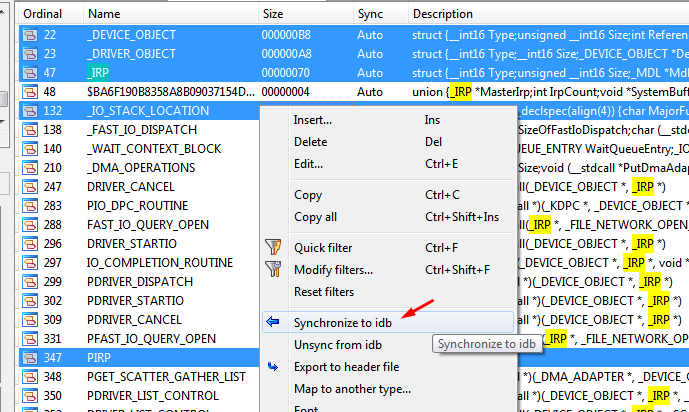
Marcaremos _DRIVER_OBJECT, _IRP, _DEVICE_OBJECT, _IO_STACK_LOCATION y PIRP y las sincronizamos pues son las que más usamos.
Lo que nos falta es agregar MajorFunction que nunca esta.
Recordamos que la podemos agregar en Local Types, usando click derecho-insert y pegamos esto.
struct __MajorFunction
{
SIZE_T _MJ_CREATE;
SIZE_T _MJ_CREATE_NAMED_PIPE;
SIZE_T _MJ_CLOSE;
SIZE_T _MJ_READ;
SIZE_T _MJ_WRITE;
SIZE_T _MJ_QUERY_INFORMATION;
SIZE_T _MJ_SET_INFORMATION;
SIZE_T _MJ_QUERY_EA;
SIZE_T _MJ_SET_EA;
SIZE_T _MJ_FLUSH_BUFFERS;
SIZE_T _MJ_QUERY_VOLUME_INFORMATION;
SIZE_T _MJ_SET_VOLUME_INFORMATION;
SIZE_T _MJ_DIRECTORY_CONTROL;
SIZE_T _MJ_FILE_SYSTEM_CONTROL;
SIZE_T _MJ_DEVICE_CONTROL;
SIZE_T _MJ_INTERNAL_DEVICE_CONTROL;
SIZE_T _MJ_SCSI;
SIZE_T _MJ_SHUTDOWN;
SIZE_T _MJ_LOCK_CONTROL;
SIZE_T _MJ_CLEANUP;
SIZE_T _MJ_CREATE_MAILSLOT;
SIZE_T _MJ_QUERY_SECURITY;
SIZE_T _MJ_SET_SECURITY;
SIZE_T _MJ_POWER;
SIZE_T _MJ_SYSTEM_CONTROL;
SIZE_T _MJ_DEVICE_CHANGE;
SIZE_T _MJ_QUERY_QUOTA;
SIZE_T _MJ_SET_QUOTA;
SIZE_T _MJ_PNP;
SIZE_T _MJ_PNP_POWER;
SIZE_T _MJ_MAXIMUM_FUNCTION;
};
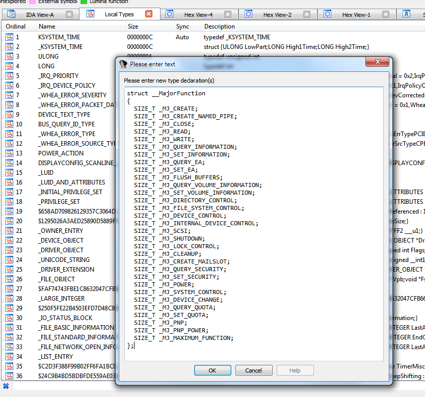
La agregamos y sincronizamos y lo ultimo es abrir en el mismo Local Types la estructura _DRIVER_OBJECT y cambiar para que el ultimo campo sea una estructura del tipo _MajorFunction.
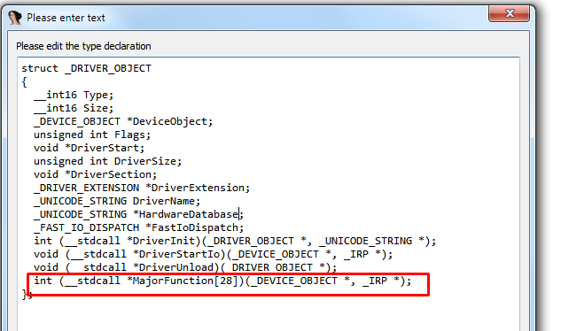
Vemos que originalmente es un array de punteros a funciones, pero si lo cambiamos a una estructura con punteros a funciones conocidas con sus nombres, será más fácil y funcionará igual y nos dará la info que necesitamos en forma más clara.
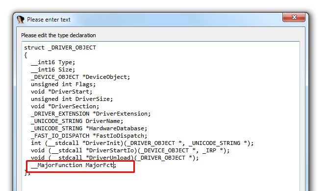
Así en vez de ser un array de punteros a funciones que no sabemos cuál es cada una, será una estructura del mismo largo que el array, pero con los punteros a funciones ya conocidas según la especificación.
Vemos que ESI mantiene el valor del puntero a _DRIVER_OBJECT en esa zona, en 0x160cf ya pierde ese valor.
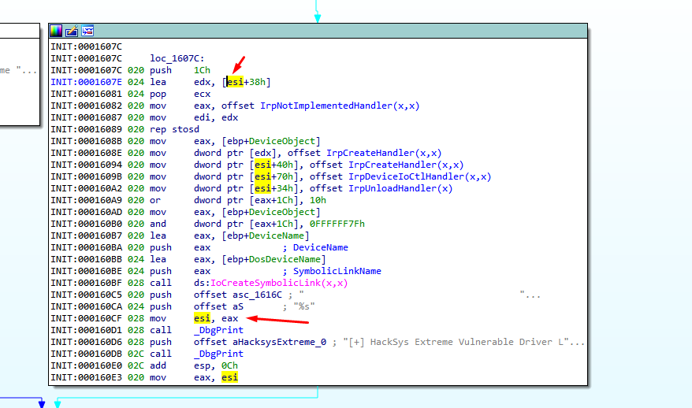
Así que marcamos esa zona (puede ser con ALT +L, bajando con la flecha del cursor y luego de nuevo con ALT+L para terminar) o si es una zona chica con el mismo mouse.
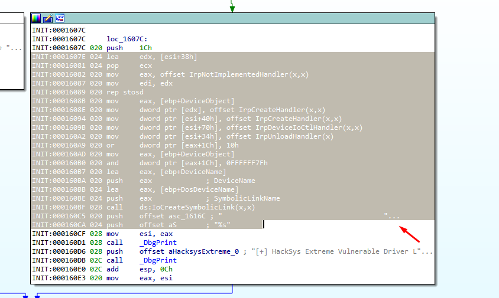
Una vez marcada la zona apretamos T.
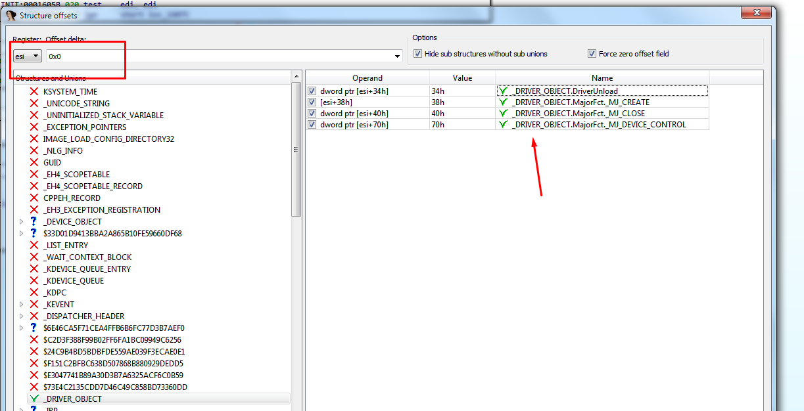
Por supuesto elegimos ESI como el registro base de la estructura y offset ponemos cero pues apunta al inicio de esta, y elegimos _DRIVER_OBJECT y nos detecta los 4 usos que renombrara.
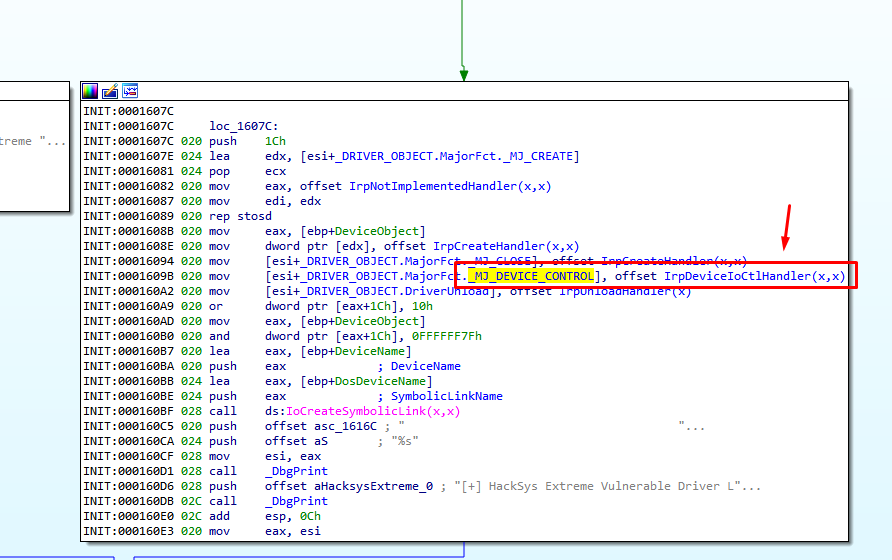
El que nos importa es el que maneja los IOCTL que es _MJ_DEVICE_CONTROL
Si no hubiéramos tenido símbolos, se hace el mismo trabajo importando el archivo .h con las estructuras de 32 bits para reversear drivers.
El archivo .h con las estructuras de 32 bits está aquí
https://drive.google.com/file/d/1VXwR45uvw1FtvzW2b9eNO1DLid9CIdx8/view?usp=sharing
y se importa en IDA desde aquí.
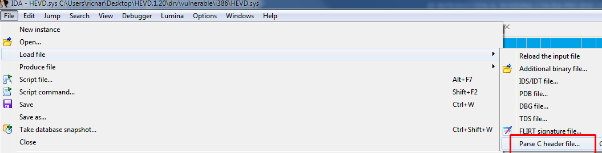
Con eso nos aparecerían las estructuras necesarias DRIVER_OBJECT, _IRP, _DEVICE_OBJECT, _IO_STACK_LOCATION y PIRP y _MajorFunction en Local Types, las sincronizaríamos y llegaríamos a reconocer de la misma forma la función que maneja los IOCTL.
En este caso al tener símbolos dicha función ya tenía nombre, el que nos daba una idea de que era la función buscada, pero como acá estamos aprendiendo es bueno saber encontrarla para todos los casos reverseando, sea con símbolos o sin símbolos.
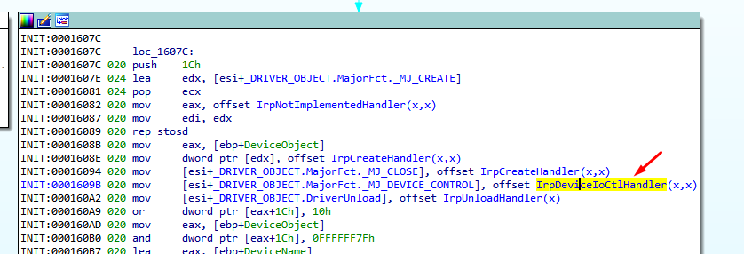
Dentro de dicha función que maneja los IOCTL, están las diferentes funciones vulnerables, en este caso la que vamos a intentar explotar es la de StackOverflowGs.
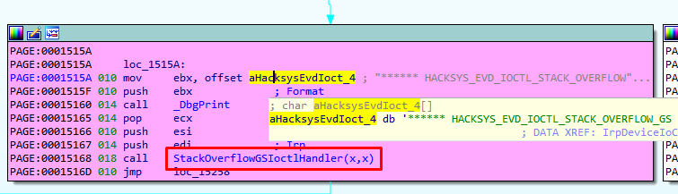
Esto va aquí
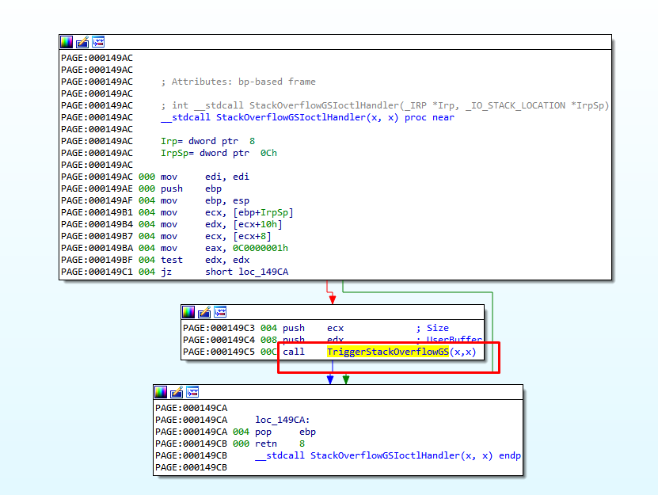
Y luego aquí.
Vemos que hay un memcpy que copia un a un buffer en el stack, la cantidad MaxCount de bytes, reverseemosla en forma completa, aunque ya vemos antes del return address que a diferencia del otro stack overflow que ya habíamos explotado, este tiene cookie.
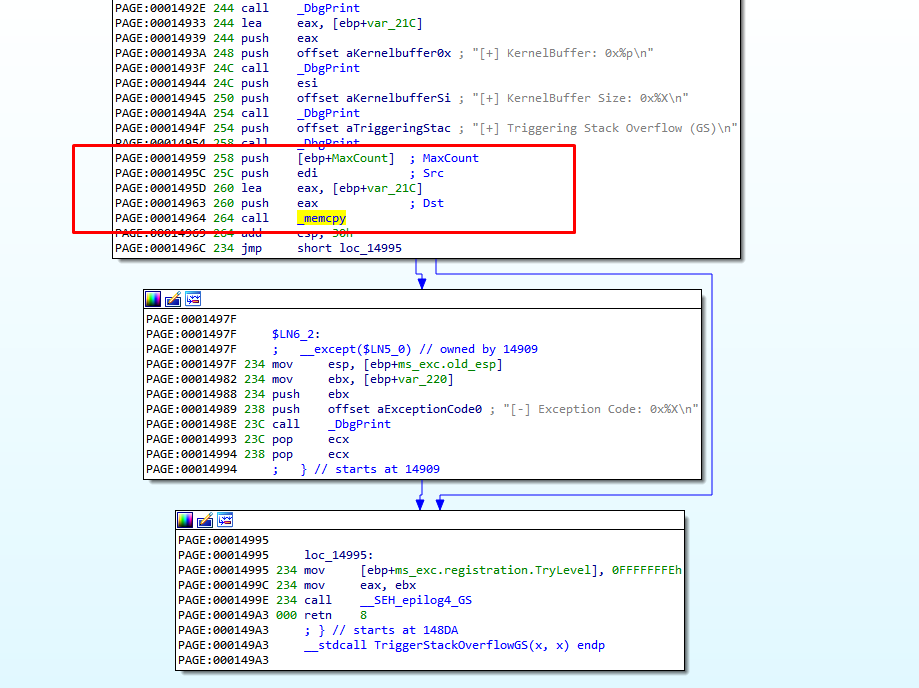
Antes del retn
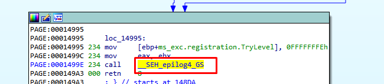
Esta ese chequeo y al inicio de la función esta
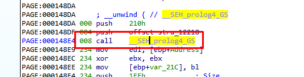
Volviendo al inicio de la función que maneja los IOCTL llamada IrpDeviceIoCtlHandler, pasa a EDI el puntero a la estructura IRP, ya habíamos visto en tutes anteriores que en 32 bits en el offset 0x60 era el puntero a una estructura IO_STACK_LOCATION que quedara en ESI.
Y apretando T en ESI+0xC.
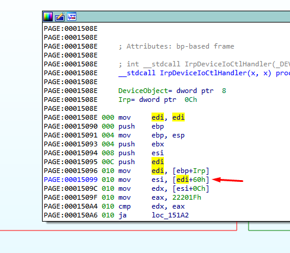
Como ya vimos IO_STACK_LOCATION varía según cual sea la función en que se usa, como acá estamos usándolo en el caso de la función que maneja los IOCTL, debemos elegir ese. (DeviceIoControl)
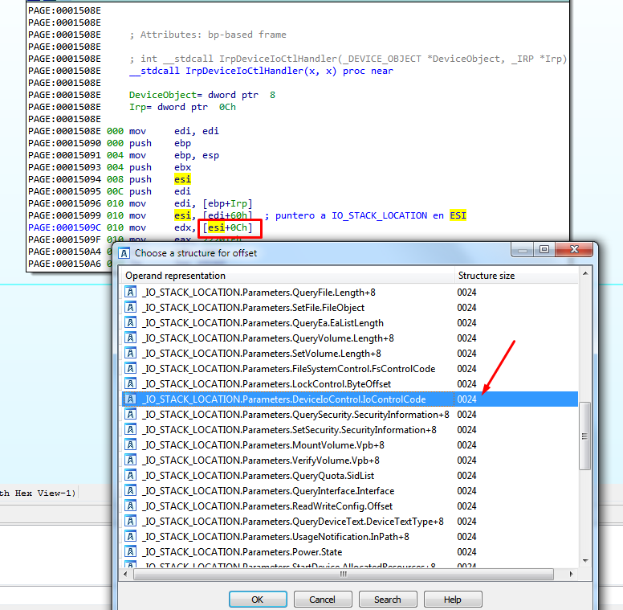
Quedo entonces así, en esta función ESI tiene el puntero a IO_STACK_LOCATION, EDX el IOCTL CODE (IoControlCode) y EDI el puntero a _IRP.
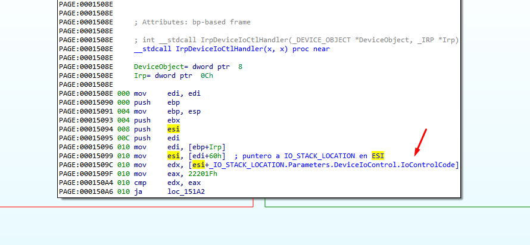
Serán ESI y EDI los dos argumentos de la llamada a la función StackOverflowGSIoctlHandler
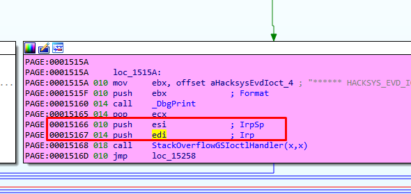
Por supuesto como tenemos símbolos, se puede ver los mismos dos argumentos en la definición de la función, uno el puntero a _IRP y el otro un puntero a IO_STACK_LOCATION.
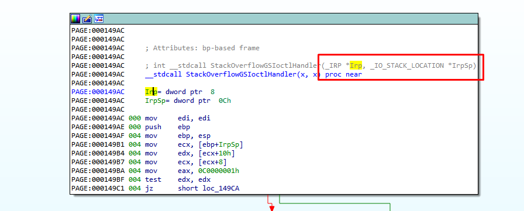
Otra vez al tratar de determinar un campo de _IO_STACK_LOCATION, debemos elegir el caso de DeviceIoControl que es el que estamos usando.
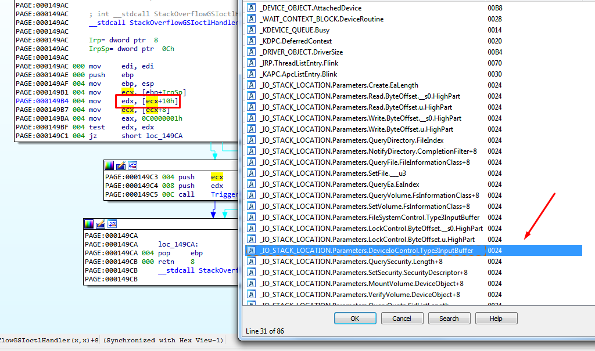
Vemos que lo que determinamos reverseando, coincide con lo que nos muestran los símbolos.
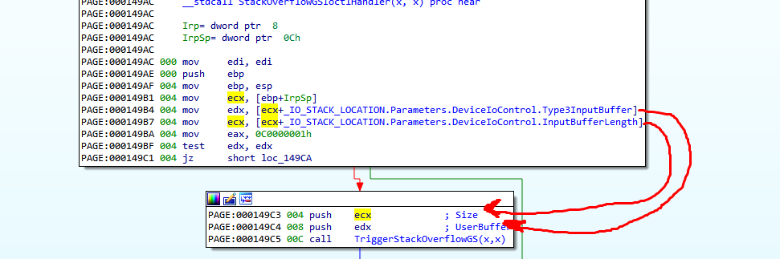
El campo InputBufferLenght es el size del buffer de entrada en user, y el Type3InputBuffer es el puntero a ese buffer de entrada en user que también le pasamos.
Renombre los dos argumentos, recordemos que al que le llamamos size_buffer_user es un numero arbitrario que le pasamos que debería ser el size del buffer, pero puede ser cualquier valor, ya que no se ve ningún chequeo del mismo.
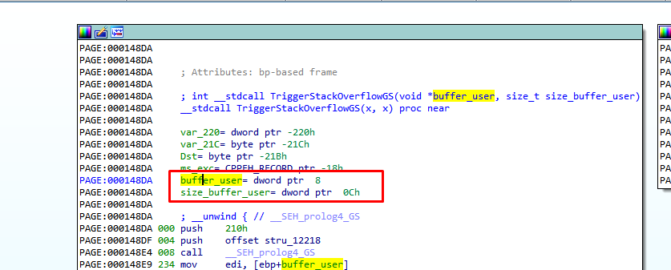
Vemos que ambos son usados sin chequeo ni modificación en el memcpy
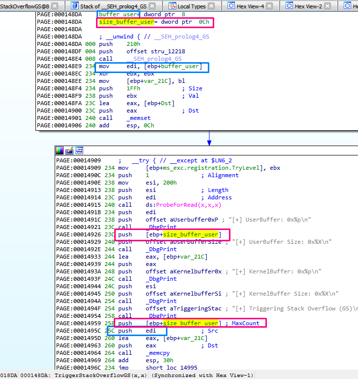
El destination del memcpy es un buffer en el stack podemos pisarlo entero el problema es que aquí no nos sirve pisar todo el stack hasta que termine, porque en ese caso no se llama al SEH como en user sino que se produce un BSOD, hay que usar otra técnica.
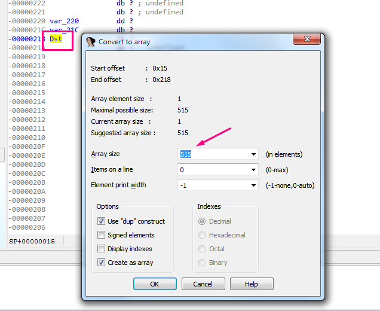
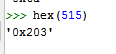
Aunque en la inicialización del buffer solo se realiza sobre 0x1ff, igual no hay problema que sobren algunos bytes.
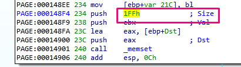
Al inicio de la función vemos que encima del return address hay una estructura CPPEH_RECORD.
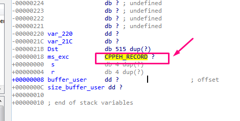
Esa justo debajo del buffer y encima del return address.
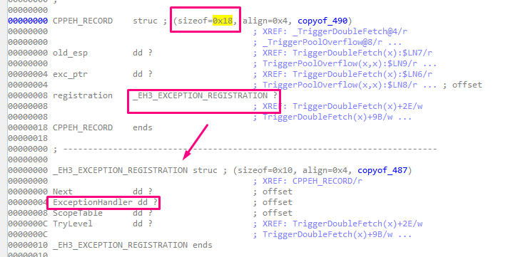
Vemos que pushea dos argumentos una contante 0x210 y un puntero a una estructura, el puntero a la constante 0x210, como es el primer push quedara justo arriba del return address r que guardo al entrar en esta misma función prologo.
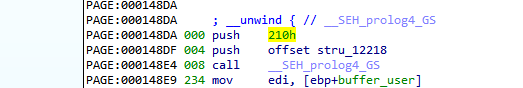
Sin embargo, vemos que IDA nos muestra que allí justo arriba del “r” esta el stored ebp o sea “s”.
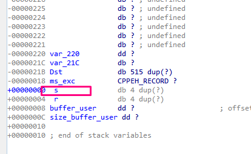
Igual si entramos en la función __SEH_prolog4_GS
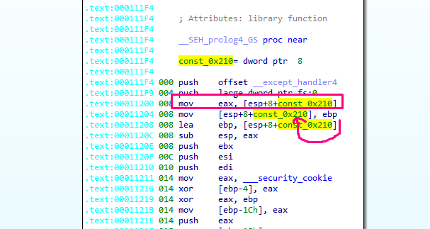
Vemos que después de mover a EAX el valor de la variable cons_0x210, luego guarda allí el ebp, por lo cual realmente arriba de “r”, queda finalmente “s” o stored ebp.
Luego arriba del stored EBP quedara el puntero a esa estructura que pasa justo después del push 0x210.
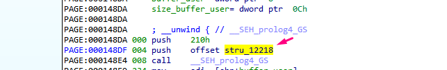
A esa dirección de una estructura 0x12218 la guarda justo arriba del “s”.
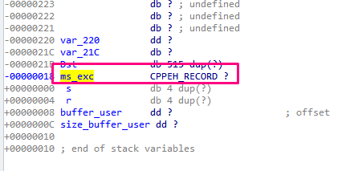
Y justo arriba del “s” está ms_exc que es una estructura del tipo CPPEH_RECORD, así que esa dirección será el último campo de dicha estructura ya veremos eso.
a.
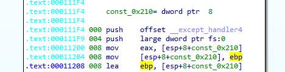
Aquí después de guardar el stored ebp en const_0x210, mueve la dirección de dicha variable a EBP, esto seria mas o menos similar a que en el inicio de una función se haga PUSH EBP, MOV EBP,ESP.
Ambos son guardar el valor de EBP de la función padre de TriggerStackOverflowGS y setear el nuevo EBP para la misma en el LEA.
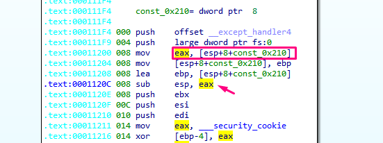
Luego hace espacio para las variables haciendo SUB ESP, EAX siendo el valor de EAX 0x210.
Y también vemos que en ebp-4 xorea el valor que había allí con la cookie que lee de la sección data.
Recordemos que en ebp-4 está 0x12218, con eso xorea la cookie de data y lo guarda allí mismo.
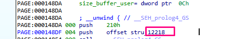
Además, xorea la cookie de data con ebp y lo guarda en ebp-1c.
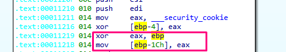
Esta es la que chequeara en el epilogo.
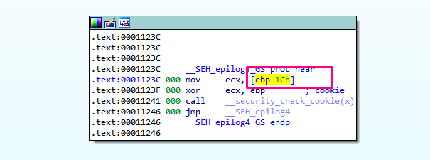
Y dentro de __security_check_cookie
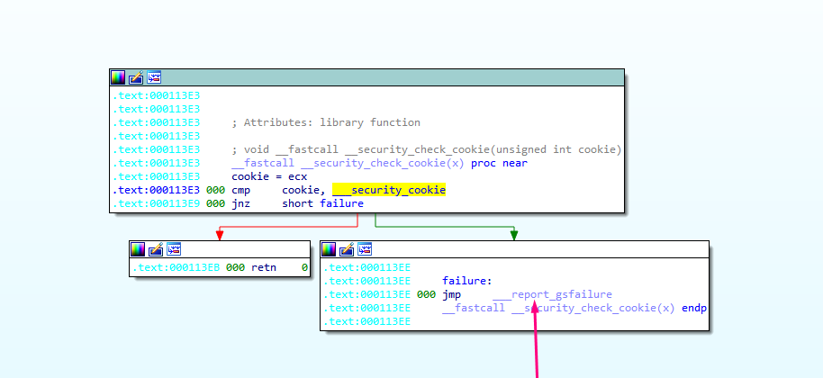
Las compara si son iguales y si no te tira a blue screen directo.
Iremos armando el stack desde el inicio según el orden que va pusheando antes de entrar al prologo:
Push 0x210 Push 0x12218
Luego entra al prologo lo que hace que guarde el return address en el stack de donde volverá, eso sería la dirección 0x148e9 ya que al salir del prólogo volvería allí.
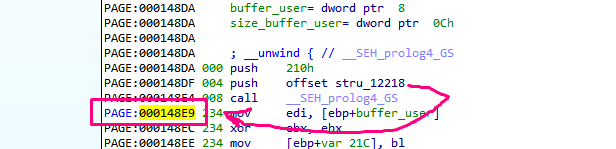
Así que al entrar en el prólogo tenemos en el stack los dos push de los argumentos y el return address donde volverá.
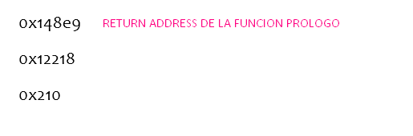
Sigamos mirando como va pusheando en el mismo.
Luego hay dos PUSH más, la dirección de la función exception_handler4 y el valor que contiene fs:0
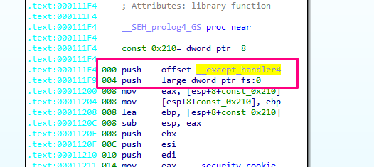
Arriba del return address entonces quedaran estos dos
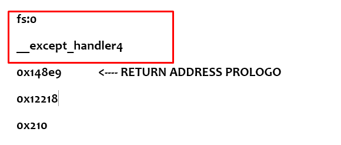
Luego el 0x210 es pisado por el stored_ebp
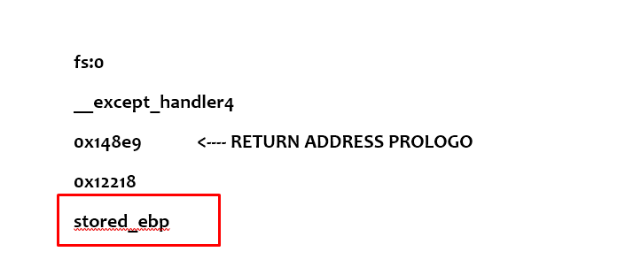
Sabemos que debajo del stored ebp estaba el return address de TriggerStackOverflowGS, lo agregamos a nuestra representación del stack.
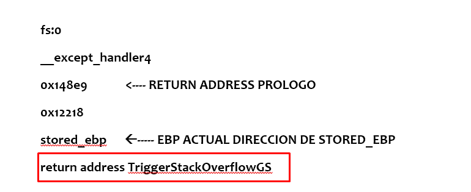
EBP actual queda con la dirección de stored_ebp (ojo con la dirección no con el valor)
A ESP se le resta 0x210 para el espacio de las variables o sea que arriba de la dirección de fs:0 menos 0x210 quedara ESP.
Luego arriba hay tres push mas de EBX, ESI y EDI
Luego el contenido de EBP-4 lo xorea con la cookie.
Como EBP ACTUAL quedo apuntando a la dirección de stored_ebp, ebp-4 apunta a 0x12218 ese valor lo xorea con la cookie.
VALOR DE EBX
VALOR DE ESI
VALOR DE EDI
…
…
…
fs:0
__except_handler4
0x148e9 <---- RETURN ADDRESS PROLOGO
0x12218 --------XORED CON COOKIE
stored_ebp ----- EBP ACTUAL DIRECCION DE STORED_EBP
return address TriggerStackOverflowGS
Si le agregamos para clarificar una primera columna, con las direcciones referidas al valor de EBP ACTUAL.
VALOR DE EBX
VALOR DE ESI
VALOR DE EDI
…
…
…
EBP-10 fs:0
EBP-C __except_handler4
EBP-8 0x148e9 <---- RETURN ADDRESS PROLOGO
EBP-4 0x12218 --------XORED CON COOKIE
EBP stored_ebp ----- EBP ACTUAL DIRECCION DE STORED_EBP
return address TriggerStackOverflowGS
Un tema aquí es que esta no es una función normal que al entrar y salir ESP queda igual que antes de PUSHEAR sus argumentos bien balanceada, esta es una función que es el prólogo de TriggerStackOverflowGS este código debería ser parte de la misma función y no estar en un CALL aparte.
Luego le resta al valor de ESP para hacer espacio para las variables para dicha función y va armando el stack, pero después no vuelve como en una función normal, buscando el return address y volviendo al valor de ESP donde este había quedado, eso no sirve aquí pues ESP debe quedar con el valor que tiene ya habiéndose restado y hecho espacio para las variables.
En una función normal, ESP queda valiendo el mismo valor al volver, que el que tenia antes de pasar los argumentos.
Pero en este caso particular esta es una función especial es como una parte de la función TriggerStackOverflowGS, hecha en un CALL aparte.
Si a ESP lo tomo como cero al inicio de la función, veo que al salir aumento 0x234 porque dentro de la función prologo se fueron haciendo varios PUSH, se hizo SUB ESP, 0x210 y se volvió sin restaurar ESP.
Allí lo vemos el volver ESP está a 0x234 del inicio.
Muchos dirán, pero si no se restaura ESP ¿cómo vuelve a encontrar el return address en el stack que está mucho más abajo del valor de ESP que devuelve la función? Jeje
Habíamos dicho que EBP-8 apuntaba al return address para volver de la función prólogo a TriggerStackOverflowGS y ESP ACTUAL después de los tres PUSH de EBX, ESI y EDI quedo allí arriba.
Si vemos en la función prologo fuerza el return address con un PUSH -RET
Pushea el valor apuntado por EBP-8 que es el return address, lo vuelve a colocar en el stack y luego hace RET volviendo a la función TriggerStackOverflowGS sin restaurar ESP y dejando todo el stack armado como estaba dentro de prologo.
Entre el PUSH y el RET solo hay MOV y LEA, así que el stack no es afectado, es similar a UN PUSH -RET.
Ya sabemos como empieza, como va acomodando las cosas en el stack y como vuelve, nos quedan algunas cosas que hace en el medio después de los tres PUSH antes del volver.
Habíamos armado el stack hasta aquí.
Hasta ese punto estaba armado así
VALOR DE EBX
VALOR DE ESI
VALOR DE EDI
…
…
…
EBP-10 fs:0
EBP-C __except_handler4
EBP-8 0x148e9 <---- RETURN ADDRESS PROLOGO
EBP-4 0x12218 --------XORED CON COOKIE
EBP stored_ebp ----- EBP ACTUAL DIRECCION DE STORED_EBP
return address TriggerStackOverflowGS
Ya sabemos que nada de esto se va a perder, todo lo que agrego o modifico dentro de prólogo en el stack, no lo quitara ya que el PUSH RET dejara el stack como estaba para la función TriggerStackOverflowGS.
Otra de las cosas que ya quedo configurada para TriggerStackOverflowGS es EBP
El mismo desde el LEA en adelante sirve como base para las variables y argumentos no solo del prologo sino de TriggerStackOverflowGS ya que desde aquí en adelante, su valor se mantiene constante, incluso después de volver.
Miro TriggerStackOverflowGS para tratar de ver donde corresponde este EBP-1c donde guarda la COOKIE.
Vemos que ms_exc es EBP-0x18 o sea que el lugar donde guarda la cookie que va a chequear, esta justo arriba de la estructura ms_exc.
Recordemos que el buffer Dst se inicializaba solo con 0x1ff y dijimos que sobraban unos bytes justo debajo del el, así que, si reajustamos Dst a que su size sea 0x1ff, tendremos la variable donde guarda la COOKIE en el stack.
Allí lo reajusto y me quedan cuatro bytes vacíos en medio, apreto D hasta que cambie a DWORD (dd) y la renombro a COOKIE.
Veo que queda en EBP-1c (a la izquierda del nombre, está la posición relativa a EBP o sea 0000001c).
Luego PUSHEA EAX y guarda el valor actual de ESP en EBP-18, eso era dentro de la estructura ms_exc que empieza allí, es el primer campo de la misma.
Si miramos dentro de la estructura el primer campo es OLD ESP
Así que el stack quedo
VALOR DE EAX
VALOR DE EBX
VALOR DE ESI
VALOR DE EDI
…
…
…
EBP-10 fs:0
EBP-C __except_handler4
EBP-8 0x148e9 <---- RETURN ADDRESS PROLOGO
EBP-4 0x12218 --------XORED CON COOKIE
EBP stored_ebp ----- EBP ACTUAL DIRECCION DE STORED_EBP
return address TriggerStackOverflowGS
Como ahora ambas funciones comparten el stack, si comparamos, vemos que arriba de STORED_EBP, está ms_exc, por lo tanto lo que PUSHEO dentro de prologo justo arriba de “s” son campos de dicha estructura también.
Esos 4 DWORDS son los 4 campos inferiores de la estructura ms_exc.
Recordamos que los últimos 4 campos de la estructura, es otra estructura de 0x10 bytes o sea 16 bytes decimal (4 DWORDS), así que justo son esos 4 DWORDS que están marcados allí en la imagen.
Los dos importantes son el NEXT y el EXCEPTION HANDLER, ya sabemos su posición en el stack, vemos que el NEXT en la estructura tiene el valor de fs:0 y el EXCEPTION HANDLER por ahora tiene el valor de __except_handler4, aunque aún no están agregados a la cadena de SEHs.
Así que si uno lo acomoda mejor al stack
VALOR DE EAX
VALOR DE EBX
VALOR DE ESI
VALOR DE EDI
…
…
…
EBP-10 fs:0 (NEXT)
EBP-C __except_handler4 (EXCEPTION_HANDLER)
EBP-8 0x148e9 <---- RETURN ADDRESS PROLOGO (SCOPETABLE)
EBP-4 0x12218 --------XORED CON COOKIE (TRYLEVEL)
EBP stored_ebp ----- EBP ACTUAL DIRECCION DE STORED_EBP
return address TriggerStackOverflowGS
Bueno ya lo tenemos mejor armado y vemos a la derecha en azul los campos de la estructura.
Como el return address ya está pusheado al stack, que después cambie el valor de la variable que lo guardaba no tiene importancia.
Vemos que en EBP-8 (SCOPETABLE) guarda el valor de la cookie de data xoreada con el valor 0x12218 que estaba en EBP-4, y luego en el mismo EBP-4 que es TRYLEVEL guarda 0xFFFFFFFE.
Al final guarda la dirección del NEXT ebp-10 en fS:0 quedando configurado el manejador de excepciones.
Sabemos que fs:0 apunta al ultimo elemento de la lista de la cadena de excepciones, o sea al superior de toda la cadena.
Recordemos que agregar un nuevo elemento a la lista se hace mediante este código
PUSH OFFSET Handler PUSH FS:[0] MOV FS:[0], ESP
Así que como acá hace
mov large fs:0, eax
Ese EAX es una dirección del stack donde estará el nuevo NEXT y debajo el SEH.
Así que como EAX es la dirección de EBP-10, allí estará el NEXT y justo debajo el SEH como habíamos dicho.
Si lo debuggeo y le envió con el mismo exploit que anda por ahí público el IOCTL correcto para que llegue a la función vulnerable (ya veremos más adelante como hacer eso, por ahora es solo para verificar).
Veo que el fs:0 apunta al elemento superior de la cadena de SEH, en mi caso 9CCEFCC0 si miro allí debe estar el NEXT y el SEH, el NEXT es 0xFFFFFFFF porque es el último NEXT de la cadena de excepciones.
La función es un típico manejador genérico, si voy a ver se ven solo los bytes pero apretando C y Create Function la armo.
Si sigo traceando el prólogo, llego a donde se guarda EAX en fs:0
Aquí vemos el nuevo manejador agregado a la cadena.
Como habíamos reverseado, ebp-10 será el nuevo NEXT y debajo está el SEH que va a ser _except_handler4, ese es el valor que tendremos que pisar para poder explotarlo.
Bueno ya tenemos todo bien ubicado es hora de empezar a hacer el exploit.
El método consiste en que como copiamos desde un buffer de user que es el source y proveemos nosotros, en vez de crashear el stack llenándolo completamente, debemos calcular que el source copie el seh en el stack y luego se agote, su size debe ser justo y debe estar calculado para agotarse justo después de copiar el SEH.
La idea es que como el crash se produce en un acceso de lectura a un buffer en user, eso hará que se maneje como un crash en user y saltara al SEH, en vez de manejarse como un crash de kernel que provocara un BSOD.
El método funciona, pero el exploit publico crashea con BSOD, así que habrá que ver en que fallo el que lo hizo, seguramente alguna pavada, veremos.
La explicación básica de este método está aquí:
http://poppopret.blogspot.com/2011/07/windows-kernel-exploitation-basics-part_16.html
y el código fuente del exploit público está aquí:
https://github.com/hacksysteam/HackSysExtremeVulnerableDriver/tree/master/Exploit
no lo voy a hacer todo en Python porque no vale la pena, pero vamos a mirar como lo hace explicarlo y arreglarlo jeje ya que no funciona.
Primero que nada, si lo hiciéramos en Python tendríamos un problema mas que se puede resolver pero, compilándolo en C++, ya tenemos un módulo que además de ejecutarse y explotar la elevación de privilegios, podremos compilarlo a nuestro gusto, por ejemplo sin SAFESEH, ni DEP, ni ASLR en las opciones del VISUAL STUDIO nos dejaran trabajar mas tranquilos, así que si alguien carga la solución o sea el archivo sln en visual studio, tendrá que cambiar las opciones por default.
Un poco más arriba esta
Bueno yo adjuntare el archivo compilado con sus símbolos HackSysEVDExploit.exe y HackSysEVDExploit.pdb, así se puede ver fácilmente en IDA.
El ejecutable se compila para todas las vulnerabilidades que tiene el driver, ejecutándolo en consola en windows 7 32 bits con los argumentos -g -c xxx.exe es suficiente pues ya le agregue al final de este método que ejecute una calculadora como system después de elevar, en los otros en vez de xxx.exe habrá que poner calc.exe o cmd.exe
Bueno vamos a la función que explota esta vulnerabilidad en este caso StackOverflowGSThread.
Después de arreglar algunos temas de consola que no vienen al caso, analicemos el exploit los abrimos el mismo en IDA vemos que la explotación empieza aquí:
Dentro vemos el llamado a CreateFile para obtener el handle del driver.
Todo esto es igual que los casos que ya vimos de kernel anteriores.
EBX queda con el handle del driver, solo se usa cuando llama mas abajo a DeviceIoControl.
Bueno luego va a Crear un File Mapping que puede ser un espacio de memoria virtual que estará asociado al contenido de un archivo. (no reserva aun la memoria solo crea el objeto y devuelve un handle)
https://docs.microsoft.com/en-us/windows/desktop/memory/file-mapping
Pero si vemos en la api CreateFileMapping, vemos que el primer argumento es el handle del archivo, pero también dice que se puede pasar INVALID_HANDLE_VALUE, en dicho caso creara el file mapping sin asociarlo a un archivo y será una memoria anónima compartida.
Bueno este es el caso, así que vemos que cuando llama a dicha api le pasa 0xFFFFFFFF que es el valor de INVALID_HANDLE_VALUE
En el código fuente lo llama SHARED MEMORY y lo crea aquí, vemos que tiene permiso de ejecución y de lectura y escritura.
Bueno esto nos devuelve el handle del file mapping.
Luego llama a MapViewOfFile que mapeara el objeto en la memoria reservando el espacio necesario para ello.
Bueno eso devuelve la dirección del inicio de la sección creada para el file mapping.
Para debuggear el exploit en user sin mirar el driver, copio server de IDA win32_remote.exe al target y lo arranco.
Lo arranco al server con permisos de administrador en el target y en la maquina donde estoy reverseando el exploit cambio el debugger a remote windows debugger, en Process Options pongo la IP y el puerto que escucha.
Recordemos que podemos debuggear perfectamente este exploit la parte de user pero en el shellcode que se lo llama desde kernel no podremos poner breakpoints ni nada porque producirá una excepción INT3 en el kernel que no se maneja desde user y se producirá un BSOD.
Si lo arrancamos sin argumentos nos muestra las opciones.
Arranco el exploit con los argumentos -g para que se explote la vulnerabilidad Stack Overflow GS,
Ahí quedo esperando
Así que puedo atachear el IDA donde reversee el exploit (no el que analice el driver)
Al apretar una tecla en el target para saltear la pausa, para en el breakpoint que puse después de la pausa
Llego hasta el CreateFileMapping
Al pasarlo con F8 me devuelve el handle del mismo.
Como habíamos dicho le pasa ese handle en este caso está en ESI
Allí nos devolverá la dirección del File mapping.
Es una sección como se pidió de 0x1000 bytes.
El tema es que esta sección la voy a user de source y tiene que copiar hasta el seh y luego terminar, así crashea en read antes de que se copie todo el stack y crashee en el stack de kernel.
Dejo este IDA pausado un minuto y abro el otro donde tengo el driver.
Una cosa que no había visto y me había equivocado es que el buffer de destino
Vemos que inicializa 0x1ff bytes, pero justo antes pone a cero el byte que esta justo arriba, y el destination empieza en var_21c, por lo cual hay que arreglar el buffer de destino para poder calcular bien y ahora empezara en var_0x21c y será de 0x200 de largo.
Ahora si quedo bien lo renombro como buffer_destino.
Quedo bien, ahí está justo en el memcpy y podemos copiar la cantidad de bytes que queremos
Obviamente no debemos copiar desde el inicio de la sección del File mapping porque debe copiar solo hasta el seh y terminarse, debo ver cuántos bytes debo copiar.
Tenemos que copiar desde ya 0x200 para llenar el buffer, 4 mas para pisar la cookie y luego está la estructura ms_exc.
Dentro de la estructura hay 8 bytes y luego el NEXT y el SEH, así que seria
Total a copiar= 0x200 + 4 + 8 + NEXT+ SEH
O sea, con 0x214 bytes pisamos el SEH.
Como la sección es de 0x1000 de largo, para saber qué dirección pasarle para que empiece a copiar, a la dirección inicial de la sección le suma 0x1000 y luego le resta 0x214, con eso utilizara esa nueva dirección como un buffer de entrada justo para pisar el seh y crashear en lectura.
Veámoslo en el debugger que quedo corriendo en el exploit.
Vemos que a la dirección del file mapping que quedo en ESI, le suma 0xdec que es 0x1000 menos 0x214.
En mi maquina 0x2c0dec será la dirección que le pasara para que empiece a copiar 0x214 desde ahí, el source del memcpy al stack.
Luego queda copiarle al buffer lo necesario, eso lo hace a continuación.
Con memset llena toda la sección de Aes (0x41)
Allí se lleno el buffer de entrada
Vemos que en la posición 0x0204 escribe 0x42424242, eso supuestamente dice que pisa la COOKIE ya que el buffer ocupaba 0x200 y la cookie esta debajo, para mi como es 0x204 pisa el DWORD justo debajo de la cookie el primer campo de la estructura ms_exc.
Después escribe en ESI+4, el valor 0x43434343
Luego le suma 8 al ESI original y escribe el NEXT y el SEH.
Vemos que quedo como dije yo la COOKIE no fue pisada con los últimos 0x41414141y piso justo debajo los 4 DWORDs de la estructura ms_exc .
Estos son los 4 que piso, así que el ultimo es el SEH.
Justo debajo del SEH se acaba la sección, como queremos que crashee por lectura al tratar de seguir leyendo, le pasaremos un size un poco más grande que 0x214.
Pongo un breakpoint antes de llegar a DeviceIoControl y al dar RUN me queda apretar una tecla en el target para pasar el siguiente system pause.
Veamos los argumentos que le pasa.
El puntero a bytes returned lo pasa con el LEA, luego 0 y 0 para el buffer de salida y su size pues no tiene, y luego vemos que la cantidad de bytes que le pasa para que copie del buffer de entrada es 0x218 o sea 4 bytes más que el largo del buffer de entrada que era de 0x214, esto lo hará crashear en lectura al acabarse el source.
La dirección del buffer de entrada había quedado en EDI
Y luego el IOCTL code 0x222007 del bug este Stack Overflow GS y el handle al device que esta en EBX como vimos.
Ya tenemos analizado el exploit, así que ahora podemos cerrarlo y atachear el IDA con el análisis del driver al KERNEL y mirar como copia los datos.
Antes de atachearlo pongo un breakpoint al inicio de la función vulnerable.
Listo ya detecto que es el mismo archivo que tenia analizado y si acepto lo rebaseara, le digo que es el mismo.
Arranco el exploit en el target.
A apretar la tecla para que pase la pausa, para en el breakpoint.
Como habíamos dicho allí copiara el NEXT y el SEH que deberemos pisar más adelante en el memcpy.
Ya que cuando demos RUN copiara y seguirá sin que podamos pararlo, podemos poner un BREAKPOINT MEMORY ON WRITE para que pare cuando copie el NEXT un poco antes de crashear, así vemos si queda todo bien.
Lo pongo en la barra de Windbg.
Creo un segmento y lo convierto en código
O si no tengo ganas lo miro en la barra del Windbg
Veamos como quedo la dirección donde supuestamente estará copiando el NEXT, recordemos que cuando armaba el source ponemos 0x44444444 para que pise el NEXT y la dirección del SEH seria 0x4037f0.

Ese de la imagen de arriba era el source veamos si quedo bien pisado en el stack.
Allí esta, paro en el breakpoint on write justo después de copiar el NEXT y ahora copiara el SEH, apreto f7.
Ahí copio el SEH
También puedo verlo en IDA
Por supuesto el modulo del exploit donde saltara lo compile sin DEP y sin SAFE SEH pues es parte de la explotación, si lo hiciera de Python no habría problema, habría que crear una zona de memoria darle permiso de ejecución con VirtualAlloc, copiar el código allí, y poner la dirección de dicha zona como SEH.
No olvidemos que esto es un Privilege Escalation, así que nosotros ya tenemos ejecución de código en la maquina pero con un usuario normal, la idea es escalar a system, así que podemos hacer cosas en la maquina limitadas por nuestro privilegio, pero correr un exe del mismo privilegio es una de ellas, y eso es el exploit, lo mismo si fuera en Python, ahí deberíamos instalar Python para poder ejecutar el .py.
Veamos la rutina del manejador de excepciones.
Ya había creado el segmento lo transformo en código con C y creo la función.
Allí no puedo poner breakpoints en un debugger en USER en el target, pero aquí sí.
Lo pongo en el Windbg, podría ponerlo en el IDA también, luego doy RUN.
Allí paro, nuestro manejador de excepciones funciono.
Por supuesto el código es el shellcode ya visto de Token Stealer que ya ha sido analizado en tutoriales anteriores.
El error en el código fuente estaba en la zona marcada después de volver de robar el token de system y guardarlo para elevar nuestro proceso, hay un POPAD que restaura los registros guardados al inicio con PUSHAD, y luego no es tan sencillo volver de kernel de una excepción a user sin romperse, por eso seguimos el consejo de la página original, usar SYSEXIT.
A EDX hay que mover el EIP donde volverá al retornar a USER y en ECX el ESP, en mi caso como lo compile sin ASLR le puse en EDX la dirección justo debajo del call a DeviceIoControl y en ESP una dirección del stack principal 0x12ff00 que no es el mismo valor que estaba ejecutando antes de la llamada a DeviceIoControl, pero como lo guarde en la sección data al valor de ESP que tenía, al volver podre restaurar el ESP correcto.
En el otro IDA con el análisis del módulo del exploit veo la dirección donde volveré.
En el IDA actual que estoy debuggeando puedo ver la misma parte del código.
Puedo poner un breakpoint allí.
Borro los breakpoints anteriores
Doy RUN
Veo que volví a USER con EIP y ESP que yo había seteado antes del SYSEXIT.
Ahí restaure el ESP leyéndolo de donde lo había guardado en la sección data 0x4212b0.
Ahora ejecutare la calculadora o el código que quiera como system aquí, podría por ejemplo inyectar código en algún proceso SYSTEM y saldré.
Quito todos los breakpoints y doy RUN
Veamos que usuario es el owner.
Listo ya terminé, pude elevar privilegios a SYSTEM.
Adjunto un zip con el código fuente modificado y el ejecutable compilado, recuerden que si lo compilan por ustedes mismos deben hacerlo sin DEP sin SAFE SEH y sin ASLR y que corre en windows 7 32 bits y ajustar si le agregan código el valor de retorno o sea EIP y ESP antes del SYSEXIT sino se romperá al volver.
Nos vemos en la parte 68
Un abrazo
Ricardo Narvaja